1 · Human Physiology, Cell Physiology, and Cell Membranes
Instructional Objectives
- Define human physiology.
- Compare and contrast intracellular and extracellular fluids.
- Define homeostasis.
- Compare and contrast the various functions of the various organelles of a cell.
- Describe the functions of the different types of genetic material.
- Explain endocytosis, exocytosis, apoptosis, mitosis.
- Compare and contrast the transport methods into and out of cell.
- Describe the structure and function of cellular membranes.
1.1 · Objectives a, b & c — Human physiology, body fluids & homeostasis
Human physiology is the study of the normal functions and mechanisms of the human body and its parts — how cells, tissues, organs, and systems work and interact to sustain life. Body water divides into two compartments. Intracellular fluid (ICF) is about two-thirds of total body water and is high in potassium (K+), magnesium, phosphate, and protein. Extracellular fluid (ECF) is the remaining one-third — comprising plasma and interstitial fluid — and is high in sodium (Na+) and chloride (Cl−). Homeostasis is the maintenance of a stable internal environment (Claude Bernard's "milieu intérieur") near a set point; it is regulated at every level, from genes and membrane transport up through the nervous and endocrine systems. Negative feedback (e.g., the baroreceptor reflex) opposes change and promotes stability, while positive feedback (e.g., the action-potential upstroke, hemorrhagic shock) amplifies it.
1.2 · Objective d — Functions of the cell organelles
The cell's organelles divide labor for protein and lipid handling. Rough (granular) ER is studded with ribosomes and extrudes newly synthesized proteins into its matrix for processing (crosslinking, folding, glycosylation); smooth ER lacks ribosomes and is the site of lipid synthesis. The Golgi apparatus receives transport vesicles from the smooth ER, further processes their contents (phosphorylation, glycosylation), and packages them for secretion — either constitutively (continuous, unregulated release) or via stimulated secretion (requiring a trigger). Lysosomes, budded from the Golgi, contain acid hydrolases (phosphatases, nucleases, proteases, lysozymes) that digest material delivered by endocytosis; peroxisomes are similar in appearance but self-replicate and contain oxidases instead, detoxifying substances like alcohol. Autophagy is the housekeeping process that degrades and recycles obsolete organelles, especially important when nutrients are scarce. Mitochondria extract energy from nutrients, producing up to 38 ATP per glucose molecule degraded (glucose/AA/FA → Acetyl-CoA → reaction with O2). The nucleus, the cell's control center, communicates with the cytoplasm through nuclear pores (~9 nm functional diameter, permeable up to ~44,000 MW); its nucleolus assembles the granular subunits of ribosomes from RNA and protein.
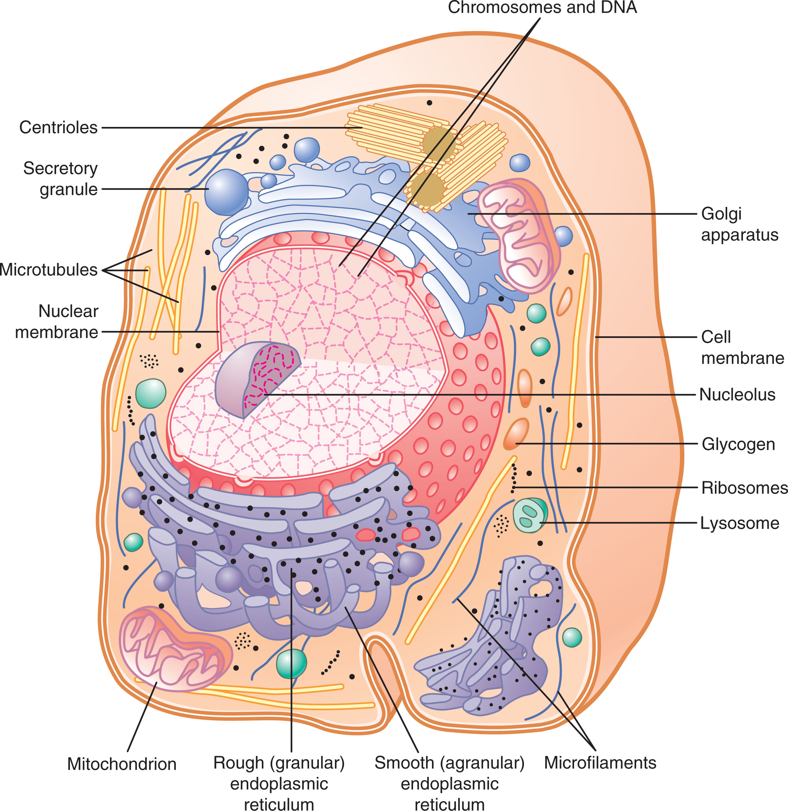
1.3 · Objectives e & f — Genetic material; endocytosis, exocytosis, apoptosis & mitosis
Genetic material: DNA stores the cell's heritable code; messenger RNA (mRNA) carries a transcribed gene to the ribosome; transfer RNA (tRNA) delivers amino acids matching each codon; and ribosomal RNA (rRNA) forms the ribosome that builds protein. The cell's genetic machinery follows a strict information flow. Transcription copies one DNA strand into mRNA, organized into codons (triplet bases) — each codon specifies one amino acid, with AUG serving as the start codon (specific for methionine) and UAA/UAG/UGA as stop codons. Translation uses tRNA to match each mRNA codon (via a complementary anticodon) to its amino acid, assembling the growing polypeptide at the ribosome; multiple ribosomes can translate one mRNA strand simultaneously as a polyribosome. During the S phase of the cell cycle (part of interphase, which occupies over 95% of the cycle), DNA replication proceeds bidirectionally from an origin, forming Okazaki fragments on the lagging strand; DNA polymerase proofreads the new strand and DNA ligase seals gaps and repairs mismatches — an uncorrected error becomes a mutation. Mitosis (the M phase) then segregates the duplicated chromosomes into two daughter cells. Cell differentiation arises not from losing genes but from the selective repression/expression of specific genes. Mitosis (the M phase) segregates duplicated chromosomes into two daughter cells, whereas apoptosis is programmed cell death that dismantles a cell cleanly without inflammation. Bulk transport across the membrane occurs by endocytosis — the membrane engulfs material inward as a vesicle (phagocytosis of particles, pinocytosis of fluid, or receptor-mediated endocytosis) — and exocytosis, where a vesicle fuses with the membrane to release its contents outside.
1.4 · Objectives g & h — Membrane transport & the structure/function of cell membranes
The cell membrane is a phospholipid bilayer (a "fluid mosaic") — hydrophilic heads facing the watery ICF/ECF and hydrophobic tails inward — embedded with cholesterol (fluidity) and integral and peripheral proteins that serve as transporters, channels, receptors, enzymes, and anchors, with an external glycocalyx for recognition. Its core functions are to act as a selective barrier, control transport, and mediate signaling. The lipid bilayer is a barrier to water-soluble substances, but membrane proteins (over 300 types) create selective pathways across it. Simple diffusion lets lipid-soluble molecules cross directly, down their concentration gradient, with no energy cost; facilitated diffusion lets water-soluble molecules cross via protein channels or carriers — its maximum rate (Vmax) is limited by how fast the transporter protein can change conformation, not simply by how many transporters are present. Aquaporins allow extraordinarily fast water diffusion (a red blood cell exchanges its water volume ~100 times per second in a capillary); ion channels are either ungated (permeability set by size/shape/charge) or gated (voltage-gated or ligand-gated). Selectivity for K+ over Na+ (or vice versa) in a channel comes down to how the channel's lining strips water molecules from the ion — carbonyl oxygens dehydrate K+ in a K+ channel, while negatively charged glutamate residues dehydrate Na+ in a Na+ channel.
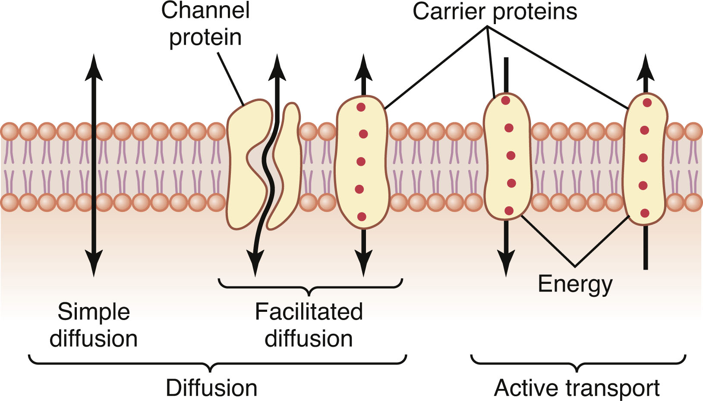
Active transport moves substances against their electrochemical gradient at an energy cost. Primary active transport uses ATP directly — the Na+-K+ ATPase pumps 3 Na+ out and 2 K+ in per cycle, consuming about 1/5 of a typical cell's energy budget (up to 2/3 of a neuron's) and maintaining the cell's osmotic balance (blocking it with ouabain causes the cell to swell and burst). Secondary active transport instead harnesses the energy stored in another ion's gradient (usually Na+): symporters move a substance in the same direction as the driver ion, while antiporters move it in the opposite direction.
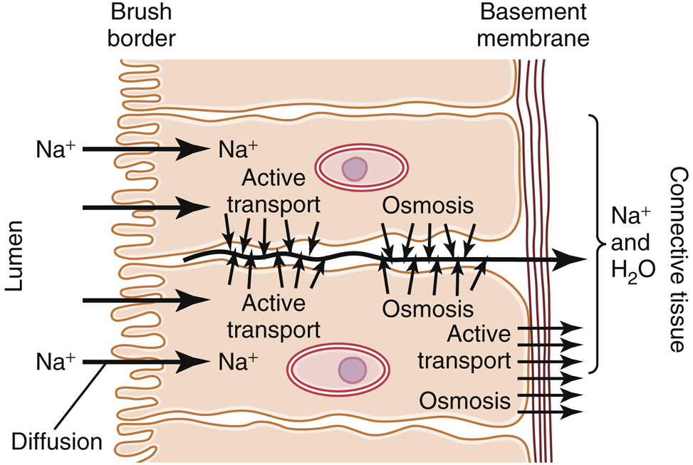
Osmosis is the net movement of water across a semipermeable membrane from high to low water concentration, driven by osmotic pressure — the pressure needed to stop that net movement. Critically, osmolarity depends on the number of solute particles, not their mass (150 mM NaCl = 300 mOsm/L because it dissociates into two particles). Tonicity is a distinct concept from osmolarity: a solution can be isosmotic (matching osmolarity) yet not isotonic, if its solute is permeant — 300 mOsm/L urea, for example, is isosmotic but not isotonic, since urea crosses into the cell and drags water with it, causing the cell to swell and burst. Steady-state cell volume is governed by impermeant particles (Na+, K+, proteins) in the extracellular fluid; permeant particles like urea and glycerol cause only transient volume changes.
2 · Cell Membrane Potentials and Action Potentials
Instructional Objectives
- Describe the molecular mechanism of muscle contractions.
- Define resting membrane potential.
- Describe action potential.
- Compare and contrast the parts of the action potential.
2.1 · Objective a — Molecular mechanism of muscle contraction
In skeletal muscle, an action potential travels down the T-tubule (an invagination of the sarcolemma) to the triad (two SR terminal cisternae flanking a T-tubule), where the T-tubule's DHP receptor senses voltage and directly opens the SR's ryanodine receptor — voltage-activated calcium release (VACR), drawing Ca2+ solely from the SR. Released Ca2+ binds troponin C, shifting tropomyosin off the myosin-binding sites on actin so the myosin heads can cycle: ATP binding detaches the head, hydrolysis "cocks" it, and release of ADP/Pi powers the tilting stroke — repeated until Ca2+ is pumped back into the SR (bound by calsequestrin) and the muscle relaxes. Without ATP, myosin cannot detach from actin at all, which is why rigor mortis sets in after death.
The sarcomere — Z disc to Z disc — is built from thick (myosin) and thin (actin, with troponin/tropomyosin) filaments plus the spring-like protein titin, which prevents overstretching and centers the thick filaments. Skeletal fibers split into Type 1 (slow, oxidative) — small, fatigue-resistant, high myoglobin/mitochondria, recruited first per the size principle — and Type 2 (fast, glycolytic) — larger, less fatigue-resistant, recruited when more force is needed. Force is graded by multiple fiber summation (recruiting more motor units) and frequency summation (firing a motor unit faster, up to fused tetanus).
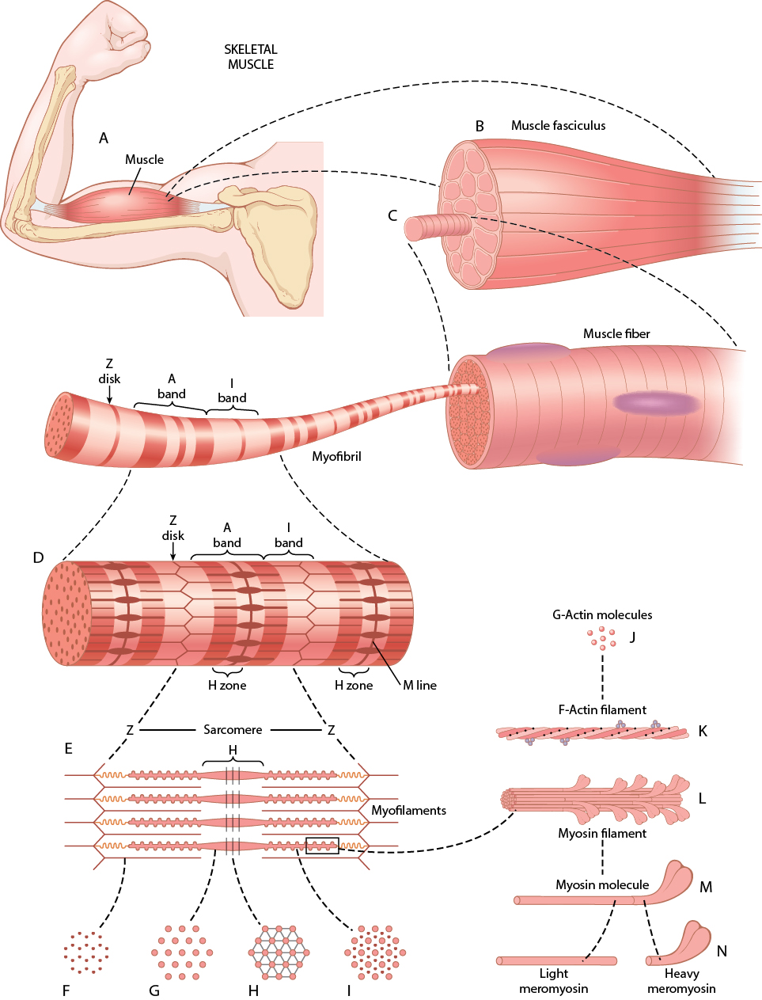
Smooth muscle differs fundamentally: it lacks troponin, instead binding Ca2+ to calmodulin, which activates myosin light chain kinase (MLCK) to phosphorylate the myosin regulatory light chain — contraction is myosin-based rather than actin-based. Ca2+ can enter via membrane channels (Ca2+ action potentials) in addition to SR release, unlike skeletal muscle. Smooth muscle is organized as unitary/visceral (electrically coupled sheets, often spontaneously active, e.g., gut/vessels) or multiunit (discrete, densely innervated bundles that only contract on command, e.g., iris, vas deferens), and it can sustain force for very long periods with remarkably little energy via the latch state.
2.2 · Objectives b, c & d — Resting membrane potential, the action potential & its parts
The resting membrane potential is the steady electrical voltage difference (about −70 to −90 mV, inside negative) across the membrane of an unstimulated excitable cell. It sits close to the potassium equilibrium potential because the membrane has roughly 100× more K+ leak channels than Na+ leak channels; the electrochemical driving force on any ion is VDF = Vm − Eion, where a positive VDF drives the ion out of the cell and a negative VDF drives it in. Raising extracellular K+ depolarizes the resting potential toward threshold, increasing excitability; lowering plasma Ca2+ makes the threshold potential itself more negative (closer to resting Vm), which also increases excitability — the mechanistic basis of hypocalcemic tetany.
The action potential is an all-or-none, non-summating, constant-amplitude depolarization that propagates without decrement, relying entirely on voltage-gated channels. During the upstroke, Na+ permeability rises (moving Vm toward ENa); during the downstroke, Na+ channels inactivate while K+ permeability rises (moving Vm toward EK). Depolarization both activates and inactivates Na+ channels, but only activates (never inactivates) K+ channels — the asymmetry that shapes the whole waveform. The absolute refractory period (no AP possible, Na+ channels inactivated) and relative refractory period (a stronger-than-normal stimulus is required) together cap the maximum firing frequency. Myelination (via Schwann cells) concentrates Na+/K+ channels at the nodes of Ranvier, enabling fast, energy-efficient saltatory conduction. Because amplitude never varies, information is coded entirely by frequency of firing.
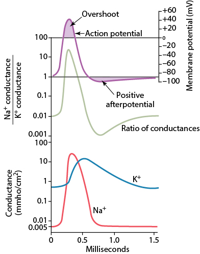
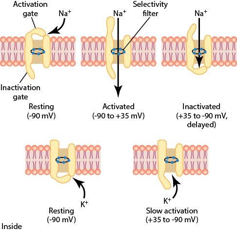
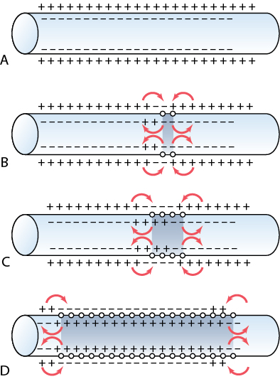
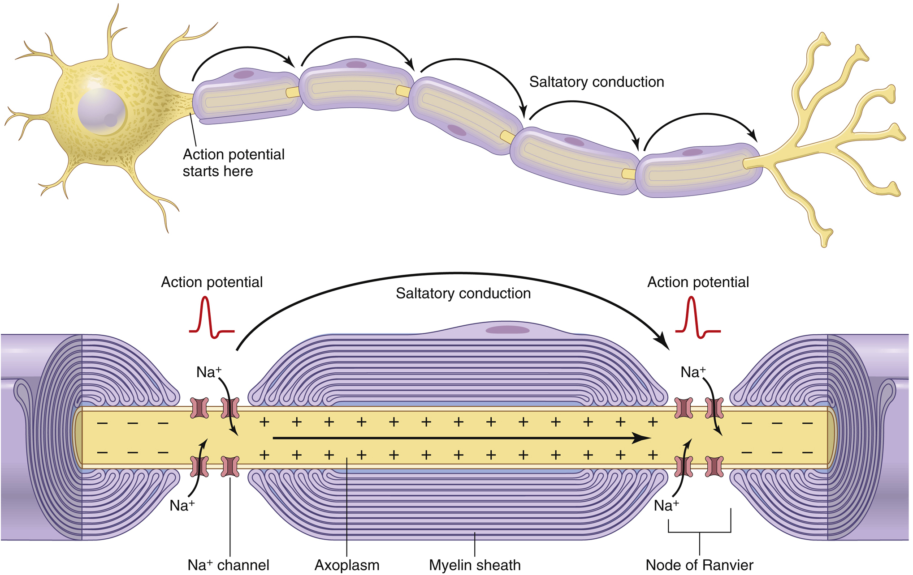
At a fast chemical synapse, transmitter release directly opens ligand-gated ion channels on the postsynaptic cell. Cation channels (permeable to Na+/K+/Ca2+, ~0 mV equilibrium potential) depolarize the cell, producing an EPSP; Cl−/K+ channels hyperpolarize it, producing an IPSP. Unlike the action potential, these electrotonic (graded) potentials are proportional to stimulus strength, decay with distance, have no refractory period, and readily summate — temporally (successive EPSPs from one synapse) or spatially (EPSPs from different synapses overlapping). At the neuromuscular junction, an action potential opens voltage-gated Ca2+ channels at the nerve terminal; the resulting Ca2+ influx triggers ~125 vesicles to release acetylcholine by exocytosis, which opens non-selective cation channels on the muscle fiber (the endplate potential) before being broken down by acetylcholinesterase to terminate the signal.
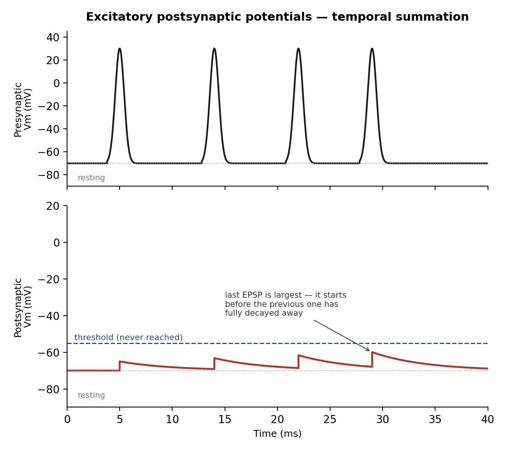
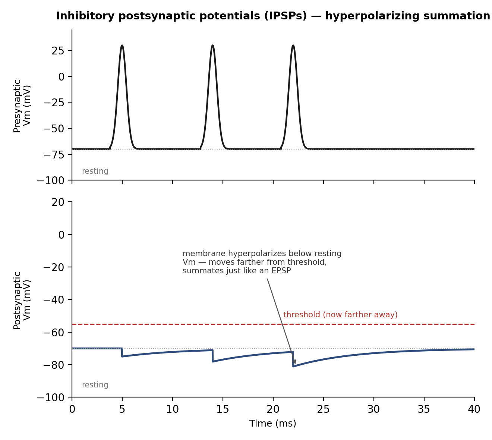
3 · Nervous System: Intro (Organization, Synapses, Neurotransmitters) and Sensory
Instructional Objectives
- Describe integrative functioning.
- Identify neurotransmitters and their properties and functions.
- Compare and contrast chemical synapses and electrical synapses.
- Describe different functional types of sensory receptors.
- Describe the steps in sensory transduction.
- Describe the somatosensory pathways.
- Describe the function of the thalamus.
- Identify the receptors for external sensory input.
- Explain the function of blood-cerebrospinal fluid and blood-brain barriers.
- Explain the formation and function of cerebrospinal fluid (CSF).
3.1 · Objective a — Integrative functioning
Signal strength is graded by spatial summation (recruiting more fibers) and temporal summation (firing existing fibers faster). Within neuronal pools, divergence amplifies a signal to many targets (one pyramidal cell driving hundreds of muscle fibers) or sends it in two directions at once; convergence lets one neuron sum input from many sources; reciprocal inhibition circuits coordinate antagonist muscle pairs; and reverberatory circuits use positive feedback to sustain a brief input as a prolonged output, until synaptic fatigue shuts it down.
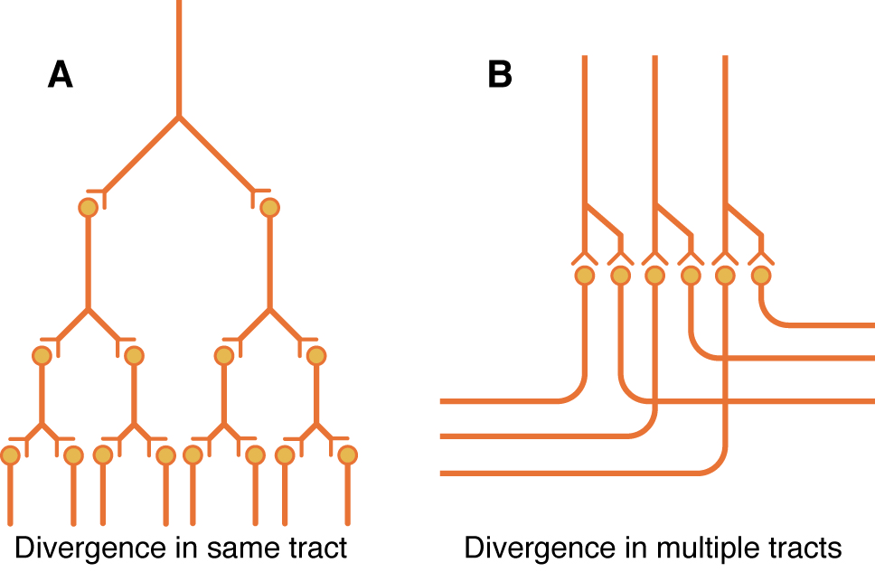
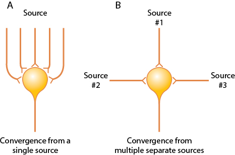
3.2 · Objectives b & c — Neurotransmitters; chemical vs. electrical synapses
Neurotransmitters fall into two classes: small-molecule, rapidly acting transmitters (glutamate — the dominant excitatory transmitter, over 90% of CNS synapses, synthesized on demand with no vesicles; GABA and glycine — the major inhibitory transmitters) mediate acute responses, while neuropeptides act more slowly but produce longer-lasting changes in receptor number and synapse size/number. Chemical vs. electrical synapses: at a chemical synapse (the vast majority) the presynaptic terminal releases a neurotransmitter across a cleft to bind receptors on the postsynaptic cell — unidirectional, with a brief synaptic delay, and highly modifiable (the basis of plasticity/learning). At an electrical synapse, adjacent cells are joined by gap junctions that let current flow directly between them — essentially instantaneous, bidirectional, and non-plastic (used where speed or synchrony matters, e.g., cardiac and some smooth muscle).
3.3 · Objectives d & e — Functional types of sensory receptors & sensory transduction
Sensory receptors are classified by modality — mechanoreceptors (deformation), thermoreceptors, nociceptors, electromagnetic (light), and chemoreceptors — and each obeys the labeled line principle: a receptor responds to a narrow range of stimuli and has a direct, dedicated line to the brain. Mechanical distortion, chemical binding, temperature change, or light all funnel into the same basic step: a change in membrane permeability that generates an electrotonic receptor potential, which only becomes an action potential once it reaches an axon (the only place with voltage-gated Na+ channels). Larger stimuli produce larger receptor potentials and higher AP frequency, but the relationship is compressed at high intensities — allowing receptors to usefully span a huge dynamic range. Most receptors also adapt to a sustained stimulus (e.g., fluid redistribution decreasing the distorting force in a Pacinian corpuscle), so receptors are tuned to detect change.
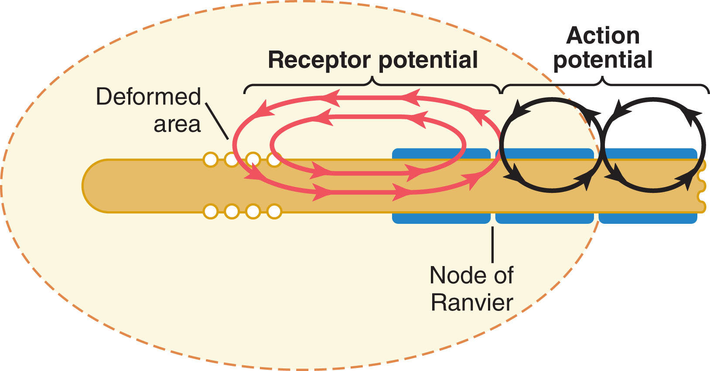
3.4 · Objectives f, g & h — Somatosensory pathways, the thalamus & receptors for external sensory input
Two ascending systems carry somatic sensation to the thalamus and cortex. The dorsal column-medial lemniscal system uses large, fast (30–110 m/s) myelinated A-beta fibers, decussates in the medulla, and preserves high spatial fidelity for touch, vibration, position, and fine pressure. The anterolateral system uses smaller, slower A-delta/C fibers, decussates in the spinal cord, and has low spatial fidelity but carries a broad range of modalities — pain, temperature, crude touch, itch. Lateral inhibition at every synaptic relay of the dorsal column system sharpens contrast and improves two-point discrimination, and the somatosensory cortex devotes vastly disproportionate area to the lips, face, and thumb relative to the trunk (the sensory homunculus).
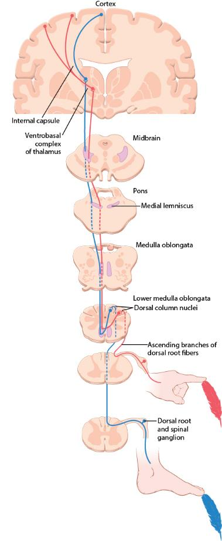
Pain has dual pathways: fast, sharp first pain travels via A-delta fibers (glutamate) in the neospinothalamic tract to the thalamus, allowing precise localization, while slow, aching second pain travels via C fibers (Substance P) in the paleospinothalamic tract, terminating diffusely in the brainstem reticular formation and localizing poorly — explaining the classic double sensation after an acute injury. Pain receptors (free nerve endings) never adapt, and intensity tracks the rate of tissue damage; bradykinin is the principal chemical mediator. The brain's endogenous analgesia system (enkephalins, endorphins, serotonin from the Raphe nuclei) and the gate theory of pain (A-beta tactile input suppressing pain transmission — the rationale behind massage and TENS) both modulate this system, and referred pain arises when visceral and cutaneous afferents converge on the same dorsal horn neuron.
3.5 · Objectives i & j — Blood-brain / blood-CSF barriers & cerebrospinal fluid
The brain depends almost exclusively on glucose (with only ~2 minutes' reserve), and its blood flow is exquisitely matched to local activity: rising CO2/H+ causes vasodilation, astrocytic Ca2+ waves triggered by synaptic glutamate spillover release vasodilatory prostaglandins, and flow is autoregulated between about 60–150 mmHg. CSF, produced by the choroid plexus (~500 mL/day, cushioning the brain), and the blood-brain barrier — built from tight junctions unique to brain capillaries, reinforced by astrocyte end-feet — together protect the CNS while still allowing selective transport of glucose and amino acids.
4 · Nervous System: Motor
Instructional Objectives
- Review the function of neuromuscular junction.
- Compare and contrast spinal reflexes.
- Describe the function of the motor unit.
- Describe the function of different types of muscle sensors.
- Describe the function of the motor pathways.
- Describe the function of the basal ganglia.
- Describe the neuro components regulated by the basal ganglia.
- Describe the function of the cerebellum.
4.1 · Objective a — Function of the neuromuscular junction
At the neuromuscular junction (NMJ), an alpha motor neuron's action potential opens voltage-gated Ca2+ channels at the terminal, releasing acetylcholine that binds nicotinic receptors on the muscle's motor end plate, producing an endplate potential that triggers the muscle action potential; acetylcholinesterase then breaks down the acetylcholine to end the signal (detailed in Section 2). Every skeletal-muscle movement begins at this synapse.
4.2 · Objective b — Spinal reflexes compared
Stretching a muscle stretches its spindle, and Type Ia afferents monosynaptically excite the alpha motor neuron — the stretch reflex — contracting the muscle to oppose the stretch (the basis of the patellar reflex) while inhibiting the antagonist. Because contracting the whole muscle alone would slacken the spindle, alpha-gamma coactivation contracts the intrafusal fibers too, keeping the spindle's stretch response intact throughout the movement. The Golgi tendon organ mediates a disynaptic autogenic inhibition reflex, relaxing the muscle at very high tension to prevent tearing. Nociceptive input drives the polysynaptic flexor withdrawal reflex (pulling a limb away from a painful stimulus) paired with the crossed-extensor reflex in the opposite limb (0.2–0.5 sec later) to shift weight and push the body away.
4.3 · Objectives c & d — The motor unit & muscle sensors
Alpha motor neurons innervate the large extrafusal fibers that generate contractile force (an alpha neuron plus its fibers is a motor unit); gamma motor neurons innervate the small intrafusal fibers of the muscle spindle, adjusting its sensitivity. Inhibitory Renshaw cells receive an excitatory collateral from an alpha neuron and feed back onto it (and its motor pool), providing negative feedback. Two proprioceptors provide constant feedback: the muscle spindle (in the muscle belly, senses length and rate of change — nuclear bag fibers via Type Ia afferents sense dynamic change, nuclear chain fibers via Type II sense static length) and the Golgi tendon organ (in the tendon, senses tension via Type Ib afferents across the full physiologic range, not just at extremes).
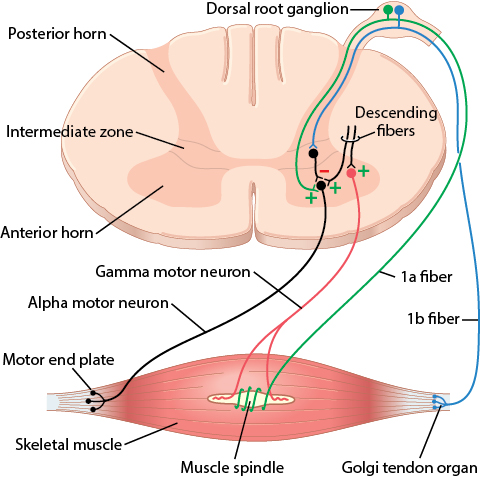
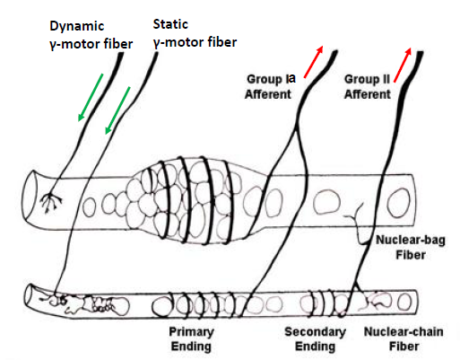
4.4 · Objective e — The motor pathways
The corticospinal tract — arising from the primary motor cortex, supplementary motor cortex, and somatosensory cortex, with its fastest fibers from giant Betz cells — crosses in the medulla to descend as the lateral corticospinal tract, the direct pathway for discrete, detailed movement. Indirect pathways route through the red nucleus (rubrospinal tract, an accessory route for fine but less discrete movement), the basal ganglia, and the brainstem/cerebellum. In the brainstem, the pontine reticular nuclei excite antigravity muscles while the medullary reticular nuclei inhibit them, balancing postural tone.
Related — the vestibular apparatus & posture
The vestibular apparatus detects head position and movement: the macula of the utricle and saccule uses gravity-sensitive hair cells (weighted by statoconia) to sense linear acceleration/head tilt, while the three semicircular ducts (oriented in the three spatial planes, each with an ampulla containing a crista ampullaris) sense angular/rotational acceleration as endolymph inertia lags behind duct rotation.
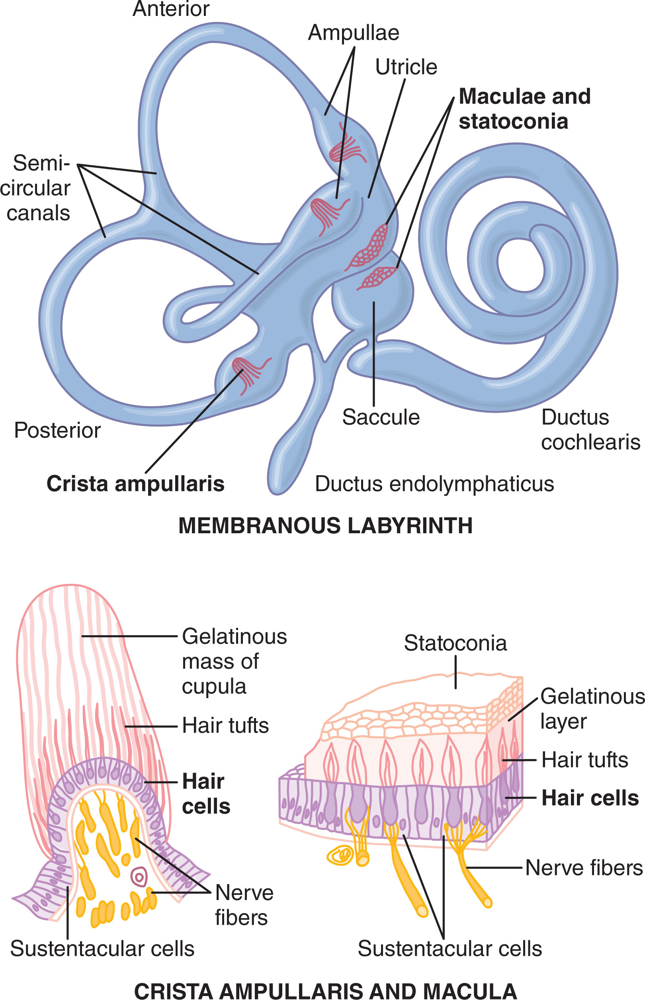
4.5 · Objectives f & g — The basal ganglia & the components it regulates
The basal ganglia (striatum = caudate + putamen, globus pallidus, substantia nigra, subthalamus) assist the cortex in executing learned, subconscious movement patterns and in planning sequential, purposeful actions — the caudate circuit leaning toward cognitive control, the putamen circuit toward execution.
4.6 · Objective h — The cerebellum
The cerebellum coordinates and times movement without initiating it: its vermis controls axial movement, its intermediate zone controls distal limbs, and its lateral zone plans and times sequential movements (communicating with the premotor cortex and basal ganglia). Deep cerebellar nuclear cells fire an excitatory burst followed by inhibition, damping movement to prevent overshoot; the inferior olivary complex compares intended movement (from cortex/brainstem) to actual movement (via sensory feedback) and adjusts climbing fiber input to Purkinje cells to correct errors — the basis of motor learning.
5 · Nervous System: Central Nervous System Functions
Instructional Objectives
- Describe the function of the autonomic nervous system and its components.
- Compare and contrast the receptors of the sympathetic nervous system.
- Compare and contrast the receptors of the parasympathetic nervous system.
- Describe the functions of the cerebral cortex.
- Describe the functions of the language areas.
- Describe the function of the brain stem.
- Describe the function of the hypothalamus.
- Describe the function of the limbic system.
5.1 · Objective a — The autonomic nervous system & its components
Every preganglionic autonomic fiber, sympathetic or parasympathetic, releases acetylcholine. Sympathetic ganglia sit close to the spinal cord (short preganglionic, long postganglionic fibers — built for rapid, widespread activation), while parasympathetic ganglia sit within the target organ (long preganglionic, short postganglionic — built for localized, specific effects). Almost all postganglionic sympathetic fibers are adrenergic (release norepinephrine, except sweat glands and a few vessels, which remain cholinergic); all postganglionic parasympathetic fibers are cholinergic (release acetylcholine).
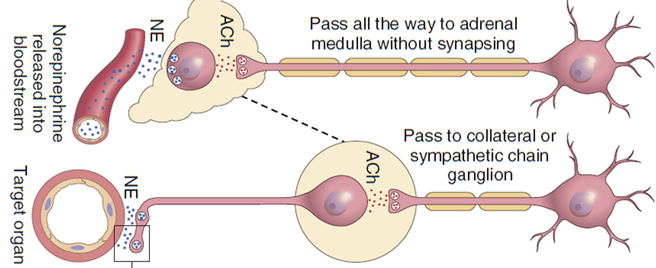
5.2 · Objectives b & c — Receptors of the sympathetic & parasympathetic systems
Acetylcholine acts on nicotinic receptors (ligand-gated ion channels, at autonomic ganglia and the neuromuscular junction) and muscarinic receptors (G-protein coupled, on parasympathetic target organs). Norepinephrine and epinephrine act on alpha receptors (vasoconstriction) and beta-1/beta-2 receptors (beta-1: increased heart rate/contractility; beta-2: bronchodilation, vasodilation in skeletal muscle) — norepinephrine favors alpha, while epinephrine activates alpha and beta about equally. The adrenal medulla releases ~80% epinephrine/20% norepinephrine directly into the blood, producing effects that last 5–10× longer than direct nerve stimulation. Sympathetic and parasympathetic tone — ongoing background activity — allows either an increase or decrease from baseline (e.g., ~50% baseline vasoconstrictor tone); a hypothalamus-triggered mass discharge of the sympathetic system produces the full fight-or-flight response.
| Alpha receptor effects | Beta receptor effects |
|---|---|
| Vasoconstriction | Vasodilation (β2) |
| Iris dilation | Cardioacceleration (β1) |
| Intestinal relaxation | Increased myocardial strength (β1) |
| Intestinal sphincter contraction | Intestinal relaxation / uterus relaxation (β2) |
| Pilomotor contraction | Bronchodilation (β2) |
| Bladder sphincter contraction | Calorigenesis (β2) |
| Inhibits neurotransmitter release (α2) | Glycogenolysis / lipolysis (β1) / bladder wall relaxation / thermogenesis (β2) |
Notice the pattern: alpha effects are almost all excitatory/constrictive (vasoconstriction, sphincter contraction, pilomotor contraction), while beta effects are a mix — beta-1 is largely cardiac excitation, but beta-2 is almost entirely relaxing/dilating (vasodilation, bronchodilation, intestinal/uterine/bladder relaxation). This is why beta-2 agonists (like albuterol) are bronchodilators rather than stimulants.
5.3 · Objective d — Functions of the cerebral cortex
Every cortical area is tied to a specific thalamic relay (except olfaction, the only sense bypassing the thalamus). The prefrontal association area supports concerted, sequential thought and holding multiple pieces of information in mind at once — the seat of working memory and executive planning. The rest of the cortex integrates sensation, generates voluntary movement (Section 4), and interprets the special senses.
Memory comes in three durations — immediate (seconds-minutes, via presynaptic Ca2+ accumulation/facilitation), short-term (days-weeks, via transient synaptic changes), and long-term (years-lifetime, via a structural increase in the synapse's vesicular release area, built from newly synthesized release-site proteins). Habituation — a progressively weaker response to a repeated, unimportant stimulus — reflects a declining number of active presynaptic Ca2+ channels; consolidation (converting immediate to lasting memory) takes time and can be blocked by shock or anesthesia, but enhanced by rehearsal. The hippocampus (evolutionarily rooted in olfactory cortex) determines which experiences matter enough to store, and its damage causes anterograde amnesia (can't form new memories); the thalamus helps retrieve stored memories, and its damage causes retrograde amnesia (can't recall old ones).
5.4 · Objective e — The language areas
In the dominant hemisphere (left, in ~95% of people), Wernicke's area handles verbal comprehension/symbolism while Broca's area controls the motor coordination of speech; destroying the visual/auditory association areas (Wernicke aphasia) abolishes comprehension of written/spoken language, while Broca damage impairs speech production alone. Communication (reading or hearing a word) flows: primary sensory area → Wernicke's area (interpretation) → arcuate fasciculus → Broca's area (word formation) → motor cortex (articulation).
5.5 · Objective f — The brain stem
Brainstem activating systems keep the cortex awake and responsive: the bulboreticular facilitatory area excites the cortex broadly (itself driven by peripheral/pain signals and cortical feedback), counterbalanced by the reticular inhibitory area. The brain stem also houses the vital cardiovascular and respiratory centers and relays motor/sensory tracts between the cord and higher centers.
5.6 · Objective g — The hypothalamus
The hypothalamus, the limbic system's major output pathway, governs vegetative functions (arterial pressure, temperature, fluid volume, endocrine secretion) and — via specific nuclei — behaviors like eating/rage (lateral), satiety (ventromedial), and fear (periventricular); its suprachiasmatic nucleus is the body's circadian master clock.
5.7 · Objective h — The limbic system
The limbic system generates and regulates emotion, with the amygdala handling fear/threat detection/emotional learning and the cingulate gyrus integrating emotion with cognition/attention. Nearly all behavior is organized around reward (medial forebrain bundle) or punishment (central gray), and punishment always takes precedence over reward.
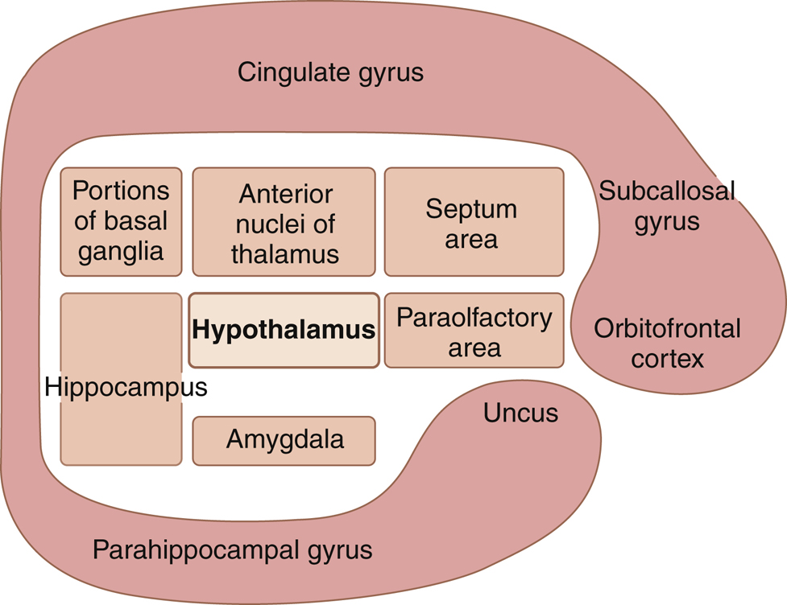